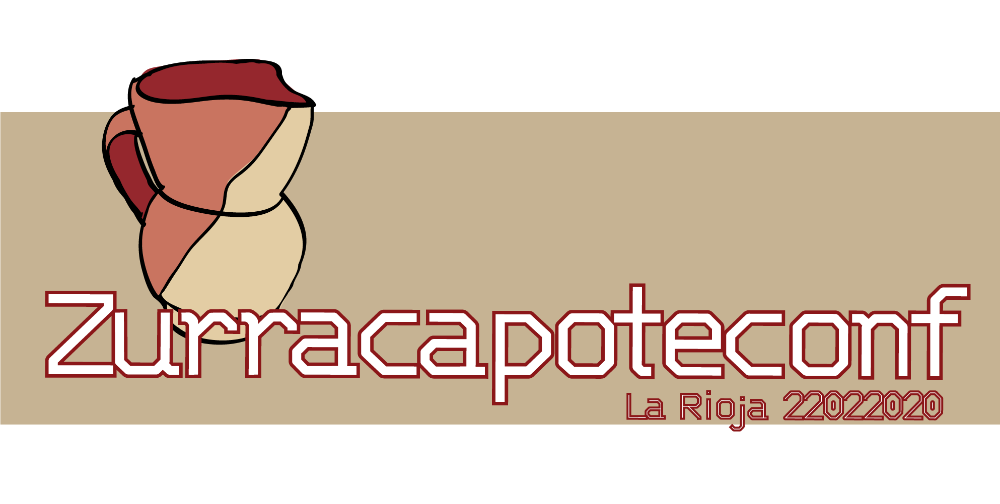

Fecha de celebración: 22 02 2020
http://zurracaponteconf.appspot.com
La Zurracapoteconf es el heredero del "DevFest
La Rioja" el evento organizado anualmente por GDG La Rioja hasta
2018, reinventado para ser mas participativo con los grupos de
community de " La Rioja Tech Alliance" para ofrecer más aforo, más
contenido y más calidad. Ahora organizado por "La
Rioja Tech Alliance" ¿Te lo vas a perder?
De la mano de Google, GDG LA Rioja
(Grupo de Desarrolladores de Google) y llega a la capital De La
Rioja el Zurracapoteconf , el mayor evento del año para profesionales,
estudiantes y aficionados a las tecnologías, que se reúnen para
intercambiar ideas, colaborar y aprender.
Por quinto año consecutivo se celebra el
evento, que transcurre durante todo el sábado 22 de Febrero 2020,
desde las 9:00 a las 18:30 horas, en el Salón de Actos del Thinktic.
La entrada es libre y gratuita previa inscripción en la web del
evento.
El Zurracaponte es el heredero directo del
DevFest La Rioja, que son eventos a gran escala, conocidos en todo el
mundo, dirigidos por la comunidad y para la comunidad que se celebran
anualmente. No hay dos DevFest iguales, todos están alimentados por la
creencia de que cuando los desarrolladores se reúnen para intercambiar
ideas, pueden suceder cosas increíbles.ademas pertenece a la nueva
corriente de eventos "Open event" de las comunicades como
Lalechazoconf, la Tarugoconf, Pulpoconf, BilboStacky otras.
Entre los objetivos de Zurracapoteconf se
encuentran divulgar las TIC’s, fomentar su utilización, potenciar el
conocimiento del software libre, impulsar el sector TIC empresarial
riojano, ofrecer una alternativa de ocio constructivo, instructivo y
participativo, así como favorecer la comunicación entre los
aficionados a la informática.
El Zuracapoteconf son eventos a gran escala dirigidos por la comunidad y para la comunidad que se celebran. anualmente por todo el mundo. No hay dos DevFest iguales, todos están alimentados por la creencia de que cuando los desarrolladores se reúnen para intercambiar ideas, cosas increíbles pueden suceder.